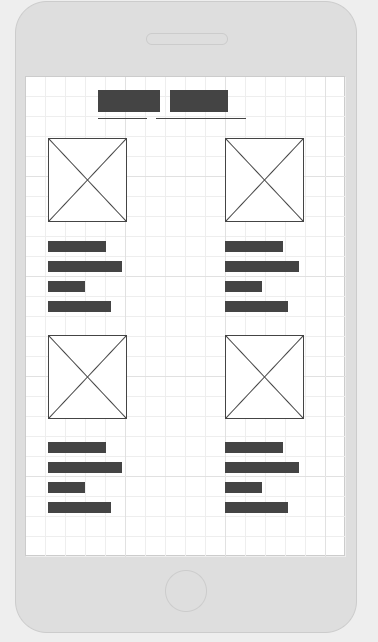

My full name is Mihail Nikolaev Karagyozov I am the lead Designer at Halfling Housing. I was responsible for most hi-fi's, mood boards and styleguides when it comes to our project "Halfling Housing"
I started out with figuring out what we should use as basic colors, a color palette, because we had to be able to work on our own, so we had to agree on colors,
so that there isnt any conflict when putting together the site at the end.After completing all the hi-fi's for the main page, I met up with one of our stakeholders - a fellow student in Groningen,
interested in our information about the tiny houses, he told me there is too much elements on the front page
and so I decided to remove the originally included kid, and replaced it with buttons on top (pictures before and after below).
That made the site more friendly towards necoming users, and easier to navigate, overall bettering the UI,
and the person I was communnicating with confirmed that he preffered the new version better.


Hopefully with this, you now have a better understanding of my job and if you ever need me for a project, you can contact me about it. Enjoy our website!